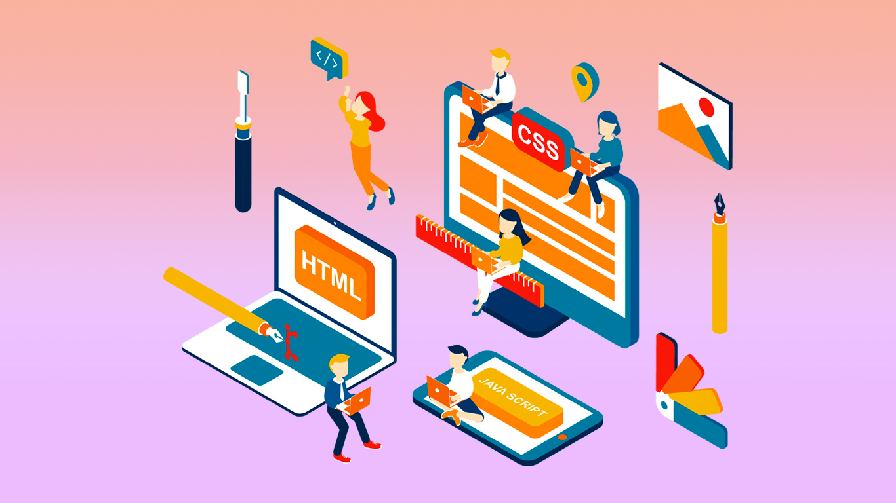

¿Qué es el Frontend?
El Frontend es la parte de una aplicación o sitio web que interactúa directamente con los usuarios. Es la capa visual y de interacción, encargada de mostrar los datos y permitir la interacción con el sistema. El desarrollo Frontend se enfoca en crear experiencias atractivas y funcionales que los usuarios puedan ver y usar.
Fundamentos del Frontend
- HTML: El lenguaje de marcado utilizado para estructurar el contenido de la web.
- CSS: El lenguaje utilizado para dar estilo y diseño a las páginas web, controlando el aspecto visual.
- JavaScript: Un lenguaje de programación que permite crear interactividad en las páginas web, haciendo el contenido dinámico.
Frameworks y Librerías Comunes
- React: Una biblioteca de JavaScript para construir interfaces de usuario.
- Vue.js: Un framework progresivo para construir interfaces de usuario.
- Angular: Un framework basado en TypeScript desarrollado por Google para crear aplicaciones web de una sola página (SPA).
Licenciatura en Sistemas Computacionales
© 2022 Ángel González Tacías